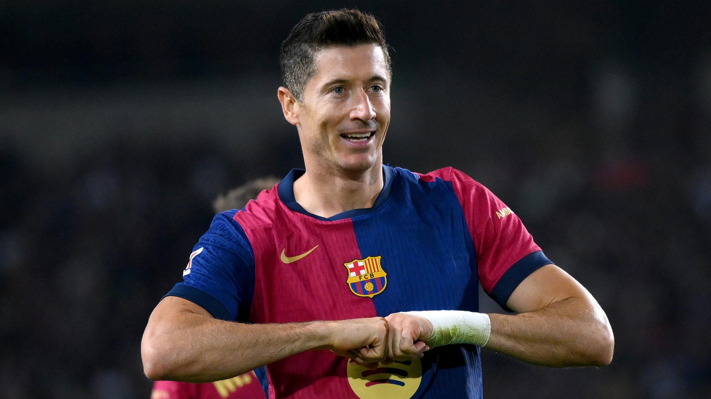

Robert Lewandowski
Delantero centro

Datos personales
- Nombre completo: Robert Lewandowski
- Fecha de nacimiento: 21 de agosto de 1988
- Lugar de nacimiento: Varsovia, Polonia
- Nacionalidad: Polaca
- Altura: 1,85 m
- Posición: Delantero centro
- Dorsal: 9
Trayectoria
- 2006-2010: Lech Poznań
- 2010-2014: Borussia Dortmund
- 2014-2022: Bayern de Múnich
- 2022-actualidad: FC Barcelona
Estadísticas con el primer equipo
- Partidos: 100+
- Goles: 60+
- Asistencias: 15+
Biografía
Robert Lewandowski es uno de los delanteros más letales de la historia del fútbol. Tras brillar en Dortmund y Bayern, fichó por el Barça en 2022. Ha ganado el Trofeo Pichichi en La Liga y es el máximo goleador histórico de la selección polaca.